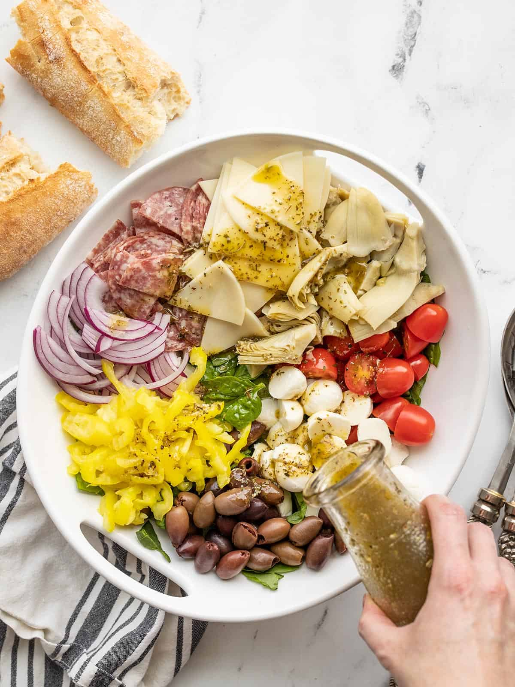

Antipasto Salad

Description
Antipasto is an Italian appetizer
course offering a snacky selection
of cured meats, pickled vegetables,
cheeses, olives, anchovies and more.
The word “antipasto” means “before
the meal” so it’s basically an
appetizer platter. This gorgeous
spread is usually served as part of
a formal meal, rather than an
everyday spread. You can read more
about antipasto here.
So to make an antipasto salad I simply
piled all those tasty little bits on
top of a bed of greens and added a
cheesy Italian dressing. And that’s
all I really want in a summer meal.
Okay, well, maybe some crusty bread
to go along with it. ;)
Ingredients
- 8 oz. salad greens of choice
- 1 12oz. jar artichoke hearts
- 1 pint grape tomatoes
- 8 oz. mozzarella
- 1 6oz. jar kalamata olives
- 1 8oz. jar banana peppers
- 1/2 red onion
- 8 oz. provolone
- Italian dressing of choice
Steps
- Cut or slice any cheeses into
bite-sized pieces. Drain the
olives and any brined vegetables.
Thinly slice the red onion and
slice the grape tomatoes in half.
- Lay your greens in the bottom of
a bowl, then top with your
antipasto items. Drizzle dressing
over the salad (start with half
the dressing and add more as
needed). Toss the salad until
everything is coated in dressing,
then enjoy.
Check out more recipes here!